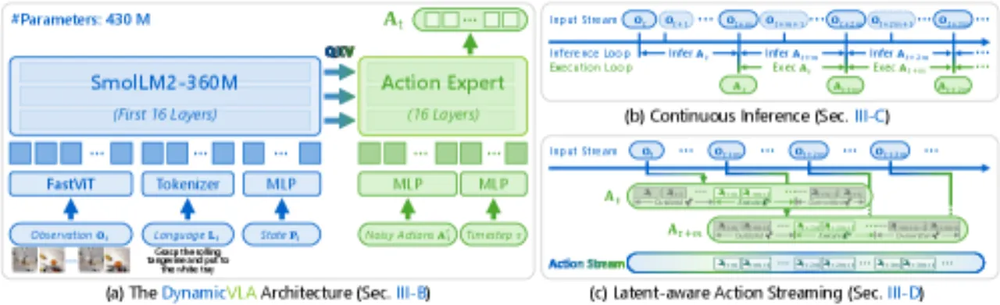
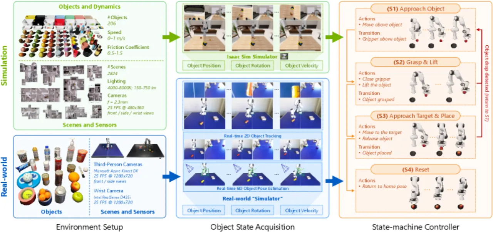
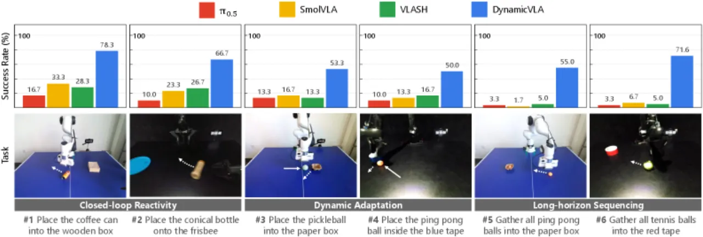
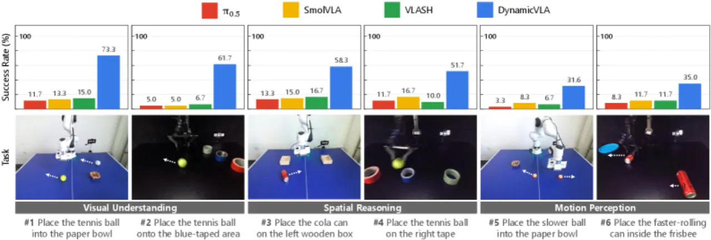
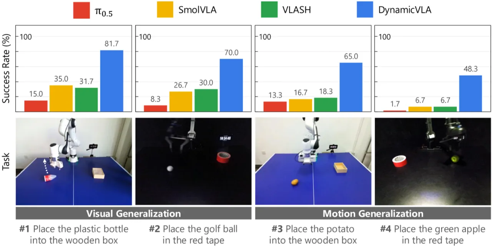

现有 VLA 模型擅长静态任务，却在需要快速感知、时序预判与持续控制的动态物体操控场景中严重失效。 DynamicVLA 提出仅 0.4B 参数的轻量架构，配合 Continuous Inference（CI） 与 Latent-aware Action Streaming（LAAS），在推理与执行之间消除等待，实现 对运动物体的高频闭环控制。在自建 Dynamic Object Manipulation（DOM）基准上， 整体成功率达 47.06%，超越最强基线 3.46×。
机器人操控领域中，绝大多数 VLA 模型都假设目标物体静止不动。然而在真实场景中，物体往往处于运动状态——传送带上的工件、被推动的容器、弹跳的球体。 此时，推理延迟直接决定成败：即便数十毫秒的延迟，也会导致感知与执行之间的时序错位，令机器人抓取"幽灵位置"而非实际位置。
"Dynamic object manipulation remains an open challenge for Vision-Language-Action (VLA) models, which…struggle in dynamic scenarios requiring rapid perception, temporal anticipation, and continuous control."

DynamicVLA 围绕三个核心设计：紧凑 VLA 架构、Continuous Inference 与 Latent-aware Action Streaming。架构追求极低延迟而非最大模型容量；推理策略则从根本上消除 chunk 间等待，并解决时序漂移问题。

语言 backbone 选用 SmolLM2-360M，并截断至 16 层（原 32 层），在多模态推理能力与推理速度之间取最优平衡（16 层：47.06% SR，0.226s；24 层：48.44% SR，0.317s）。 视觉编码器采用 FastViT 卷积架构，而非 Transformer 方案： "FastViT outperforms transformer-based encoders by lowering encoding latency through reduced tokenization"（FastViT：47.06% SR，0.226s 推理；Transformer 编码器：28.89% SR，0.233s 推理）。 Action expert 基于 Flow Matching Transformer，采用扩散式动作生成。 时序视觉输入选用稀疏双帧 {ot-2, ot}（以 25 FPS 采样，间隔 0.08s），兼顾速度感知与推理开销。
传统方案在执行完一个 action chunk 后才触发下一次推理，造成不可避免的等待间隙。CI 改为： "triggers inference cycles as soon as the previous inference finishes, independent of whether the previously predicted action sequence has been exhausted." 推理与执行全程流水线并行，消除 inter-chunk waiting，使机器人始终在执行动作的同时完成下一轮感知与预测。 消融实验显示，CI 将成功率从 36.11% 提升至 47.06%（+30.4%）。
CI 引入新的时序问题：某一推理周期预测的 action 序列，在执行时目标物体已移动到新位置，导致旧 action 作用于"幽灵轨迹"。 LAAS 的解决方案："Actions in At corresponding to timesteps earlier than t+m are discarded as outdated"， 始终优先执行最新 chunk 中的动作。消融实验显示，在 CI 基础上叠加 LAAS 进一步将成功率从 39.72% 提升至 47.06%（+18.5%）。
为弥补现有基准缺乏动态场景的不足，作者构建了 DOM 基准：
在 DOM 仿真基准上，每种方法评估 1,800 次（10 场景 × 9 维度 × 20 次试验）。 所有 baseline 均在 DOM 数据集上 fine-tune，使用其官方实现与预训练权重。 真实世界评估使用次级机器臂驱动物体运动，每项任务 20 次试验 × 3 种配对运动-位置组合。
| 方法 | Interaction 均值 | Perception 均值 | Generalization 均值 | 整体 SR (%) |
|---|---|---|---|---|
| Diffusion Policy | 12.0 | 9.8 | 22.1 | 13.61（最强基线） |
| π0 | ~18 | ~10 | ~20 | ~16 |
| π0.5 | 21.0（最高） | — | — | ~15 |
| SmolVLA | — | — | — | ~12 |
| DynamicVLA（本文） | 47.2 | 41.6 | 52.3 | 47.06 |
具体子维度亮点（均为 DynamicVLA vs. 最强 baseline）：



| 配置 | SR (%) | 关键结论 |
|---|---|---|
| 135M backbone | 26.67 | 参数过少，表征能力不足 |
| 360M backbone（本文） | 47.06 | 效率与鲁棒性最优平衡 |
| 1.7B backbone | 24.33 | 延迟过高，动态任务性能反而下降 |
| Transformer 视觉编码器 | 28.89 | token 增长导致延迟增大 |
| FastViT（本文） | 47.06 | 降低编码延迟，成功率提升 |
| 去掉 CI | 36.11 | chunk 间等待拖累响应速度 |
| CI + 去掉 LAAS | 39.72 | 过时动作造成时序错位 |
| CI + LAAS（本文） | 47.06 | 完整系统 |
将 CI 与 LAAS 嵌入现有模型（无需重训练）的效果： π0.5 + CI/LAAS = 15.89% SR；SmolVLA + CI/LAAS = 25.56% SR；DynamicVLA = 47.06% SR。 说明大模型因推理延迟过高，无法充分发挥 CI/LAAS 的优势——低延迟架构是前提。
作者明确指出："dynamic tasks tightly couple perception, reasoning, and execution, demanding architectures that preserve understanding under strict latency budgets." 截断 backbone（16 层而非 32 层）带来约 1.4% 绝对成功率的让步（24 层达 48.44%），是工程权衡而非最优精度。
当前方案强调"短至中等时域的反应性交互"，对于物体持续运动的长时序列场景（Long-horizon Sequencing 仅 40.5%）仍存在明显差距，尚未解决持续运动状态的长期跟踪问题。
数据采集流程依赖刚体 6D 位姿估计："non-rigid or fluid dynamics with continuously evolving states…remain an open challenge." 现有管线无法处理布料、液体或形变物体。
即便是 DynamicVLA，在"干扰鲁棒性"子维度的成功率也仅为 26.5%，远低于其他维度，反映系统对不可控外部扰动的处理能力仍然有限。
将 CI 与 LAAS 迁移到较大模型（π0.5、SmolVLA 等）时收益有限，说明方法的有效性与低延迟架构深度绑定， 不能简单地将动态操控能力通过推理策略"插件式"叠加到高延迟大模型上。